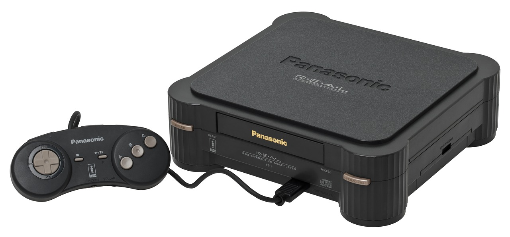
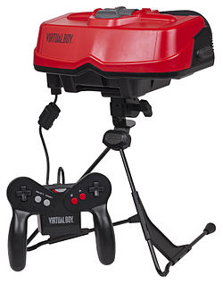
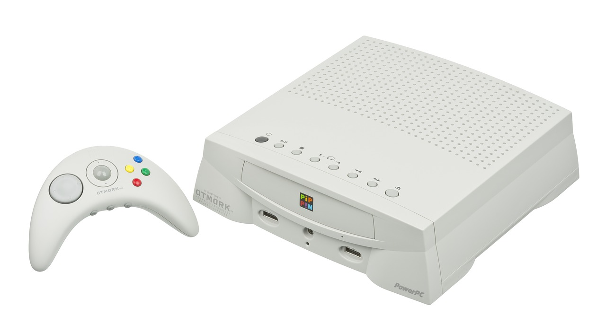
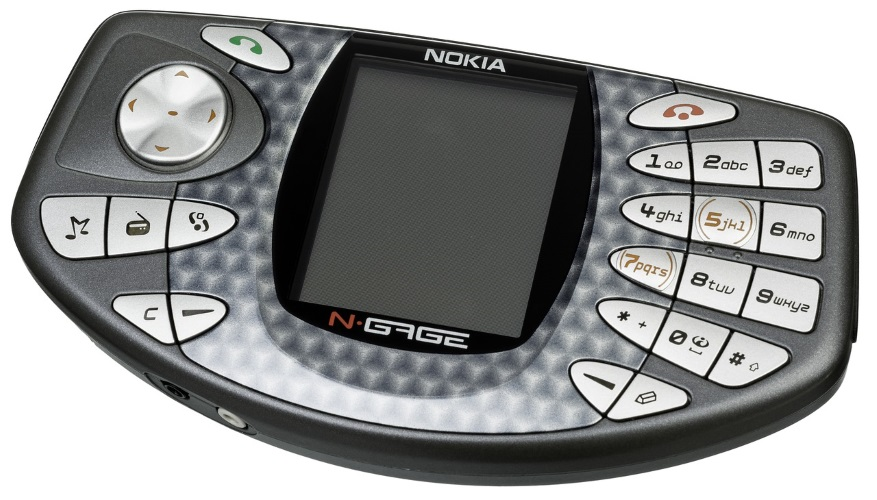
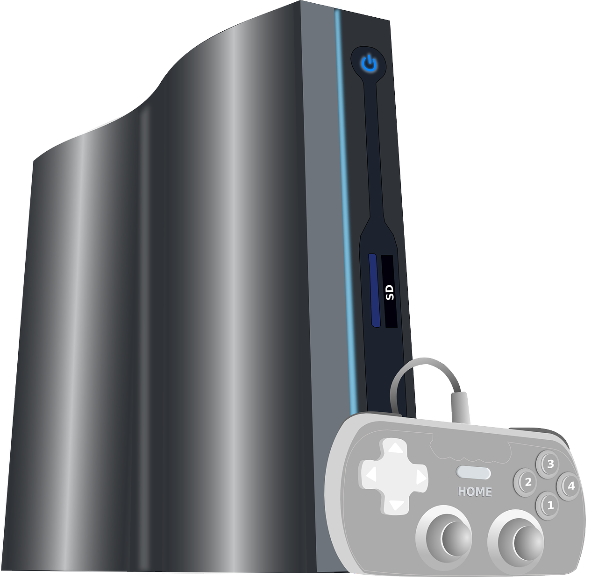
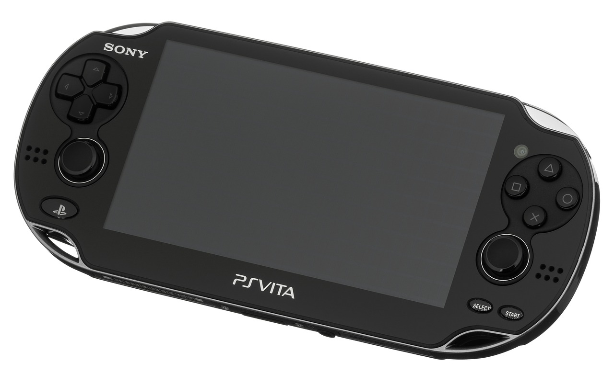
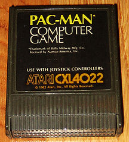

Fails
Carlos Goering
O mundo dos consoles teve seus jogos de sucesso e consoles como também seus fails,
neste post vou listar alguns dos consoles e jogos que não deram certo, alguns pouco conhecidos e outros nada conhecidos.
A lista a seguir segue a ordem de lançamento e é dividida entre consoles e jogos.
Consoles
3DO (1993)

Na postagem 5ª Geração já foi falado um pouco sobre o 3DO, o console da 3DO Company, este que foi o primeiro console de 32 bits,
um dos motivos para estar nesta lista é pelo preço, para a época os U$$ 700 eram caros,
e os concorrentes vieram com tudo, com hardware equivalente ou até mais potente e preço muito mais competitivo.
Virtual Boy (1995)

De longe o console mais controverso da Nintendo, dentre os consoles muito populares da Nintendo existe o Virtual Boy que foi a tentativa da Nintendo de
entrar no mercado de realidade virtual lá nos primórdios do VR, alguns dos motivos para o console não vingar foi: Ergonomia, um console pesado que era difícil de jogar sem o tripé por ser pesado era difícil se sentir confortável. O tempo de jogo era algo em torno de 30 minutos, porque caso o jogador passasse do tempo poderia ter problemas de visão.
O público alvo da Nintendo, as crianças, só poderiam jogar depois dos 7 anos pois o console trazia danos ao globo ocular em desenvolvimento.
Apple Pippin (1995)

Muitos não sabem, mas a Apple teve seu momento no desenvolvimento de consoles,
uma parceria com a Bandai tornou possível o lançamento do console que infelizmente possuía uma biblioteca pequena de jogos.
O console custava U$$ 599, foram fabricadas 100 mil unidades e foram vendidas 42 mil unidades aproximadamente.
N-Gage (2003)

Foi o primeiro híbrido de smartphone e portátil de games da Nokia, era vendido em seu lançamento a U$$ 300 (R$ 1700,00), vendeu apenas 3 milhões de unidades, metade do estoque,
foi um bom aparelho para desenvolvedores, porém para os jogadores tinha vários problemas, como a tela que diferente dos outros portáteis da
época era mais vertical e Para trocar de jogo era necessário a retirada da bateria.
Zeebo (2009)

Um console nacional e pouco conhecido, fabricado pela Tectoy era vendido a R$ 499 e foi concebido com a ideia de um
console sem a necessidade de mídia física para países emergentes.
Dentre a biblioteca de jogos tinham grandes nomes como
Need for Speed: Carbon, Quake 1 e 2,
Resident Evil 4 porém os jogos eram versões portadas de smartphone.
PS Vita (2011)

O sucessor do PSP, o console portátil da Sony, foi um verdadeiro fracasso de vendas ele vendeu somente 14 milhões de unidades e
dentre os problemas a Sony prometeu jogos simultâneos com o PS4,
o que obviamente não aconteceu, jogos não chegaram de forma simultânea e a falta dos mesmos foi o principal agravante para a situação do console.
Jogos
Pac-Man (1982)

Não, não estou comentando sobre a versão clássica do jogo que foi um sucesso, e sim a versão convertida para
o Atari 2600 que é de longe a pior versão do jogo, e é considerado o pior port da história (até o momento), foi o jogo mais vendido na
época e também o mais devolvido, dentre seus problemas está a completa reformulação feita pela Atari que acabou transformando o jogo original
de 8 KB para 4 KB, as bolinhas que o Pac-Man comia transformaram se em retângulos, os inimigos piscavam a todo momento tornando o jogo ainda mais
difícil.
Resident Evil: Operation Raccoon City (2012)

O jogo tinha foco no multiplayer online e seguia a ideia de jogo de ação, que para alguns jogadores foi onde o RE se perdeu, o jogo focou no tema já saturado
de RE e seguiu a fórmula de outros jogos como ter muitos zumbis em jogo tornando se algo mais difícil, porém nada que lembre os jogos antigos.
Alien Colonial Marines (2013)

Diferente do último jogo Alien Isolation lançado pela Sega, o jogo Alien Colonial Marines é bem ruim, cheio de bugs os gráficos são fracos,
modo multiplayer que não agradou e a falta de consistência com os filmes que deram origem aos jogos.
Final Fantasy: All The Bravest (2013)

Jogo da franquia FF que não foi muito bem recebido pelo público, foi uma versão para iOS e Android lançado no modelo in app purchase, infelizmente lançado
prematuramente o jogo tinha problemas de mecânica, como por exemplo a impossibilidade de selecionar o inimigo que quer atacar ou mesmo os ataques completamente
parecidos entre os personagens e independente da classe.
No Man’s Sky (2016)

O jogo traz a ideia de criação de mundos onde o usuário supostamente não conseguiria
explorar tudo e por ser um universo tão grande os jogadores não se encontrariam, o jogo é sim bom de jogar porém cansativo, muitos mundos são praticamente
idênticos, os mesmos materiais nada muito diferente algo bem cansativo e a ideia de não encontrar outros jogadores no jogo realmente é verdadeira, de fato os
jogadores não se acham inclusive quando estão no mesmo planeta e na mesma galáxia, isso porque o jogo saiu sem o multiplayer, então não é pelo fato do jogo ser
grande que os usuários não se encontram e sim porque o jogo não tem multiplayer.